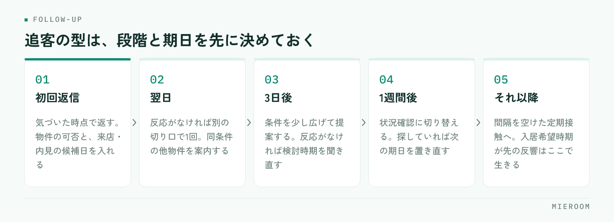

賃貸仲介の反響管理の方法は、入口をひとつにまとめ、次のアクションと期日を必ず記録するの2点に集約されます。取りこぼしは担当者の意欲ではなく、反響がどこに届き、誰が持ち、次にいつ動くかが決まっていないから起きます。原因、入口の統一、記録項目、追客の型、週次で見る数字を順に解説します。
反響の対応漏れは、この4つから起きる
取りこぼしは、忙しい日に偶然起きるものではありません。原因はほぼ次の4つで、どれも仕組みの側にあります。
- 入口が分散している：ポータルのメール、自社サイトのフォーム、電話、LINE、紹介。届く場所がバラバラだと、全部を見に行ける人がいません。
- 担当が決まっていない：「誰かが返すだろう」の反響は誰も返しません。営業時間外や休日の分で特に起きます。
- 次の予定が記録されていない：初回返信までは動くのに、その後の予定を書いていない反響はそこで止まります。
- ステータスが人によって違う：「追客中」「検討中」「保留」が混在すると、残っている反響を数えられません。
この4つは順番に効きます。入口を直さずに担当だけ決めても、気づけない反響が残るからです。直す順番は、入口 → 担当 → 次のアクション → ステータス。初動の速さが成約率に効く理由は反響の初動5分で扱っているので、本記事は記録と追客の回し方に絞ります。
反響の入口をひとつにまとめる
最初にやるのは、反響が届く場所を1本にすることです。経路は増えていきますが、見る場所は1つに揃えるのが原則です。
- ポータル・自社サイト：フォームやメールで届く分は自動で取り込むか、その場で1行足す。個人の受信トレイに残さない
- 電話：受けた人がその場で入力する。メモ用紙と口頭の伝言に頼らない。折り返すなら担当と期日まで書く
- LINE：問い合わせが来た時点で登録する。トーク画面だけで完結させると、他の人から状況が見えません
- 紹介・直来店：媒体欄を「紹介」「直来店」として同じ表に入れる。除外すると媒体ごとの成績が合わなくなります
集約とは「1つの受信箱に転送する」ことではなく、全経路の反響が1行ずつ並んだ一覧が1つある状態を作ることです。転送では、いま誰が持っている反響なのかが分かりません。
反響管理表に記録する項目を決める
反響管理表の列は、反響が進む順に左から並べます。増やしすぎると入力されないので、次の範囲に絞ります。
- 受付：受付日時（日付だけでなく時刻まで）／媒体／反響の種類（物件問い合わせ・来店予約・資料請求）
- 顧客：氏名／連絡がつく手段（電話・メール・LINE）／問い合わせ物件
- 希望条件：エリア／賃料の上限／間取り／入居希望時期／来店の可否
- 対応：対応状況（未対応・返信済・アポ設定・来店済・申込・見送り）／担当者
- 次：次のアクションの内容／その期日／最終接触日
欠けると最も痛いのは最後の2列です。「次のアクション」と「期日」が空の反響は、その時点で止まっている反響です。ここさえ埋まっていれば、対応状況が多少ずれても案件は前に進みます。
対応状況と媒体は必ず選択肢にします。文字入力では表記が割れ、数える段階で狂うからです。媒体ごとの費用対効果は媒体別ROIをどう出すかにまとめています。
追客の型：段階と期日をあらかじめ決める
追客は、思い出したときにやるものではなく、決めた段階に沿って回すものです。段階はこう決めます。

- 初回返信：気づいた時点で返す。物件の可否と、来店・内見の候補日を必ず入れる
- 翌日：反応がなければ別の切り口で1回。同条件の他物件を案内する
- 3日後：条件を少し広げた提案をする。反応がなければ検討時期を聞き直す
- 1週間後：状況確認に切り替える。まだ探しているかを確かめ、探していれば次の期日を置き直す
- それ以降：月に一度など間隔を空けた定期接触へ。入居希望時期が先の反響はここで生きます
この日数は運用例です。反響の量や商圏で変えて構いませんが、段階の数と間隔を店舗として1つに決めることが肝心です。担当ごとに追い方が違うと引き継ぎができません。各段階を終えたら、次のアクションと期日を必ず入れ替えます。
週次で見るのは「その場で手を打てる件数」
店長が週に一度見る数字は、その場で指示を出せる数え方にします。反響数や返信済み率のような割合は、見ても次の行動が決まりません。
- 未返信の件数：受付から一度も返信していない反響。担当者名と一緒に出す
- 次のアクションが未設定の件数：対応中なのに次の予定が空の反響
- 期日を過ぎた次アクションの件数：その日のうちに消す対象
- 担当が空欄の件数：入ってきたのに誰も持っていない反響
- 来店予約が入っているのに、来店結果が未入力の件数
いずれも「今週中にゼロにできる件数」で数えるのがポイントです。件数なら、その場で担当を割り振れます。割合では分母が増えたのか分子が減ったのかが分からず、指示に変わりません。見る時間も固定します。週の初めに前週の残りを片づけ、週末に翌週の期日を確認する。この2回で、止まっている反響はほぼ拾えます。
明日から使える、取りこぼし防止チェック
いまの運用に当てられる項目です。1つでも「いいえ」があれば、そこが取りこぼしの出口です。
- 反響の経路をすべて書き出し、全部が同じ表に1行ずつ入っているか
- 受付日時に時刻が入っているか（日付だけでは遅れが見えません）
- すべての行に担当者が入っているか。空欄が1つもないか
- すべての行に「次のアクション」と「期日」が入っているか
- 対応状況が選択肢になっていて、表記が割れていないか
- 営業時間外・休日の反響を、誰が翌朝に拾うか決まっているか
- 見送りになった理由を、選択肢で1つ残しているか
- 反響から来店、申込へ進んでも、同じ顧客として追い続けられるか
- 週に一度、未返信と期日超過の件数を数える時間が決まっているか
全部を一度に直す必要はありません。まず「担当」と「次のアクションの期日」の空欄をゼロにするだけで、止まっている反響が表に出てきます。申込より後ろの管理は賃貸仲介の申込管理表の作り方にあります。
まとめ：反響管理は「記録の型」で決まる
賃貸仲介の反響管理の方法は、特別なテクニックではありません。入口をひとつにまとめ、記録する項目を決め、追客の段階を統一し、週次で「未返信」と「次のアクション未設定」を数える。この4つで取りこぼしは減ります。漏れは注意力ではなく、記録の型で防ぐものです。
ミエルームは、この記録の型をそのまま画面にした賃貸仲介向けの業務管理SaaSです。フォームやメールから反響を自動で取り込んで一覧に並べ、担当と次のアクションを持たせたまま、接客・申込まで同じ顧客として追えます。LINE・SMSの自動追客や反響分析、Excelからのインポートにも対応します。いまの管理表を置き換えられるか確かめたい方は、デモアカウントをご用意しますのでお気軽にご相談ください。